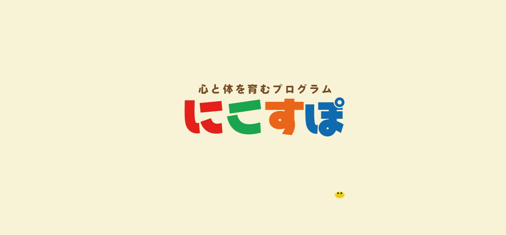
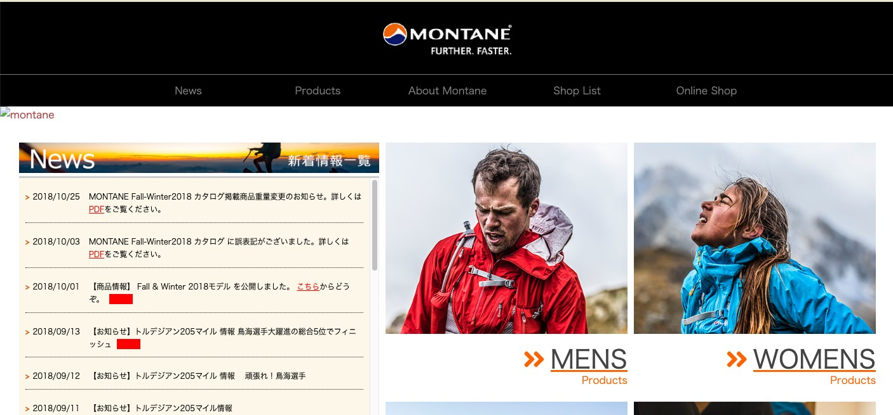
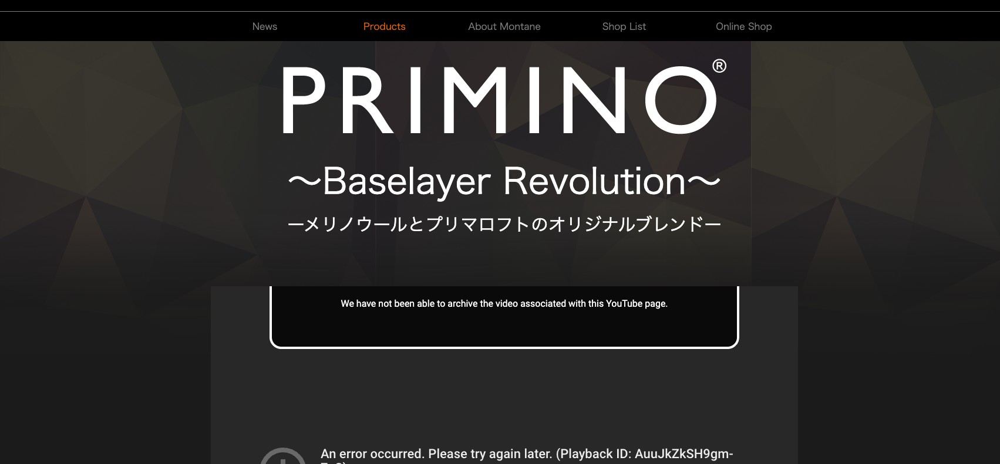
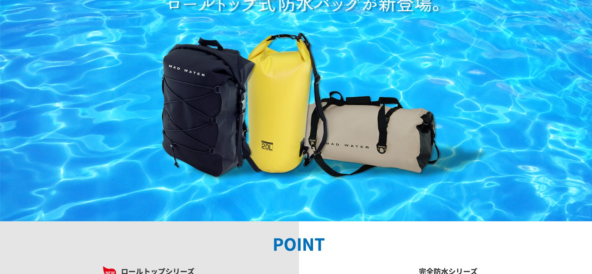
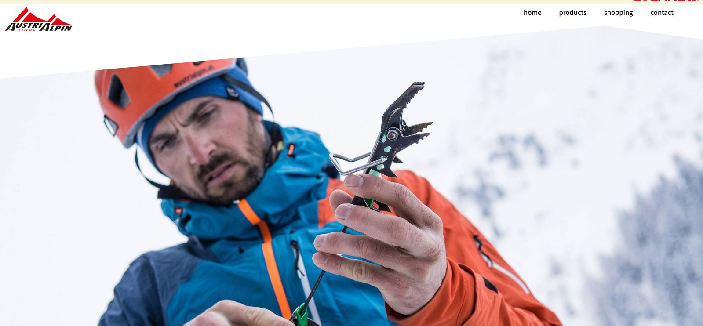
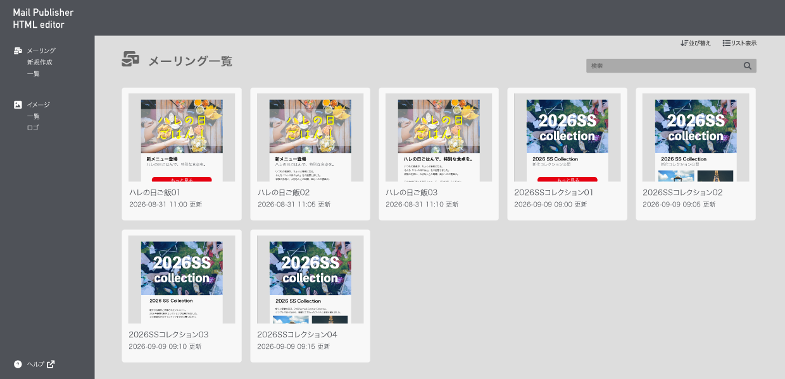
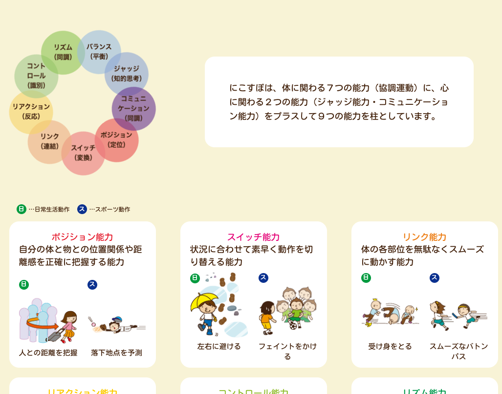
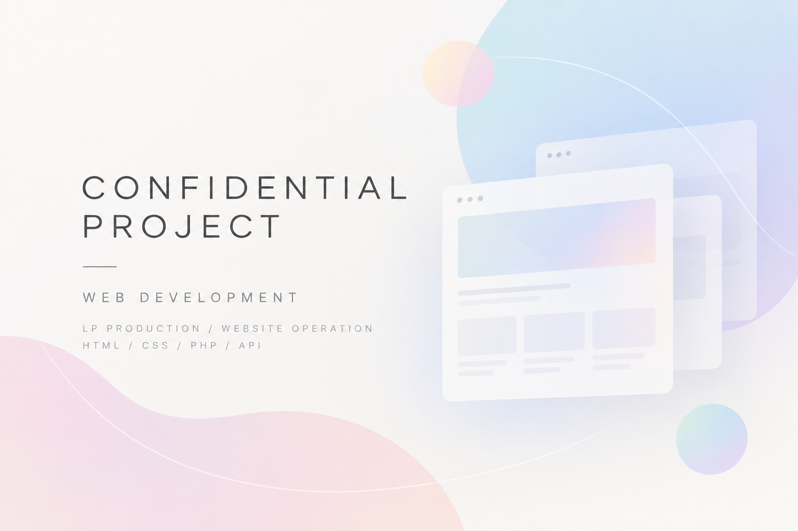

にこすぽ
学校体育事業の一環として展開する教育プログラム「にこすぽ」のWebサイト制作を担当。ヒアリングから提案、デザイン、実装まで一貫して対応しました。
PORTFOLIO
Webデザイン・グラフィック制作からHTML/CSS・Vue.jsによるUI実装まで。
DESIGN WORKS
Webサイトの企画・構成からデザイン、実装、運用まで。
ブランドや商品の特性に合わせて制作した実務実績をご紹介します。

学校体育事業の一環として展開する教育プログラム「にこすぽ」のWebサイト制作を担当。ヒアリングから提案、デザイン、実装まで一貫して対応しました。

アウトドアブランド「Montane」日本公式サイトの制作・運用を担当。

Montaneのベースレイヤー「PRIMINO」の特設ページ制作を担当。

防水バッグブランド「MAD WATER」の商品訴求ページ制作を担当。

クライミングギアブランド「AustriAlpin」のブランドサイト制作・運用を担当。

i-zome商品のプロモーションページ制作を担当。
FEATURED PROJECT
歯科医療従事者向けマッチングサービス
歯科医療従事者と歯科医院をつなぐサービスの フロントエンド開発に参加。 新規画面の実装から既存機能の改修まで、 幅広く担当しました。
デザインシステムをもとに、コンポーネントの共通化や再利用を意識。 デザイナーと直接仕様を確認しながら、 余白やサイズなど細部までデザインを忠実に再現しました。
FEATURED PROJECT
Mail Publisher HTML editor
HTMLの知識がないユーザーでも、
直感的にメールを作成できるエディタの
UIデザイン・実装を担当しました。

OTHER PROJECTS

LANDING PAGE
教育サービスのランディングページ。 構成・デザインからHTML/CSS実装、公開まで一貫して担当しました。

WEB DEVELOPMENT
企画LPや既存サイトのページ制作やAPI連携に加え、 独自CMSの管理画面改修・全面リニューアル、 テンプレート差し替えを担当しました。
SKILLS
チームで連携し、Webアプリケーションを実装する。
Vue.jsを用いた新規画面の実装や既存機能の改修、 API連携、共通コンポーネントの改修などを経験。 Gitを用いたチーム開発にも携わってきました。
デザインを、精度高くWeb上に再現する。
デザインの意図をくみ取りながら、 レスポンシブ対応やCSSアニメーション、 UIコンポーネントの実装を行います。 見た目の再現性だけでなく、 保守性や再利用性も意識してコーディングします。
OTHER SKILLS
画面構成、ワイヤーフレーム、UIデザイン、 Webサイト・LPのデザイン。
Figma / Photoshop / Illustrator
独自CMSの管理画面改修・テンプレート差し替え、 ページ追加・更新、既存サイトの改修、 QA、本番リリース、公開後の継続運用。
CMS / Update / QA / Release
ABOUT ME
大分県の自然に囲まれた場所で、 家族とのんびり暮らしています。
日々の子育てで起こるちょっとした出来事を、 育児漫画にして Instagramに投稿しています。
趣味は海外ドラマや映画を観ること。 気に入った作品は何度も繰り返し観るタイプです。
CONTACT
Web制作、UI実装、更新・運用などについて
ご相談いただけます。